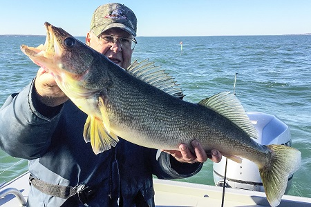
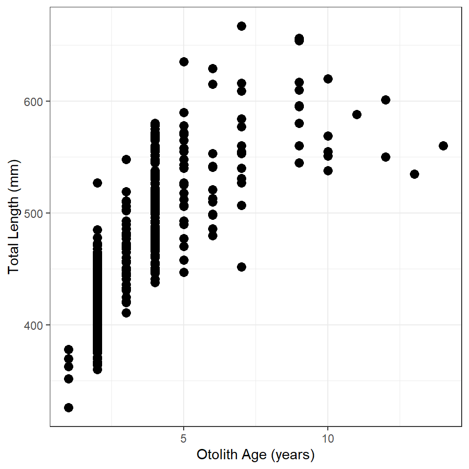
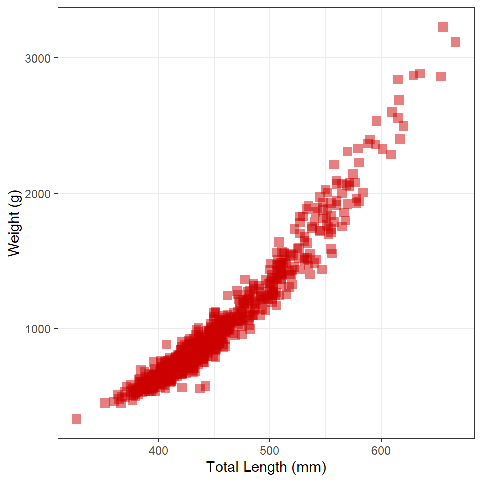
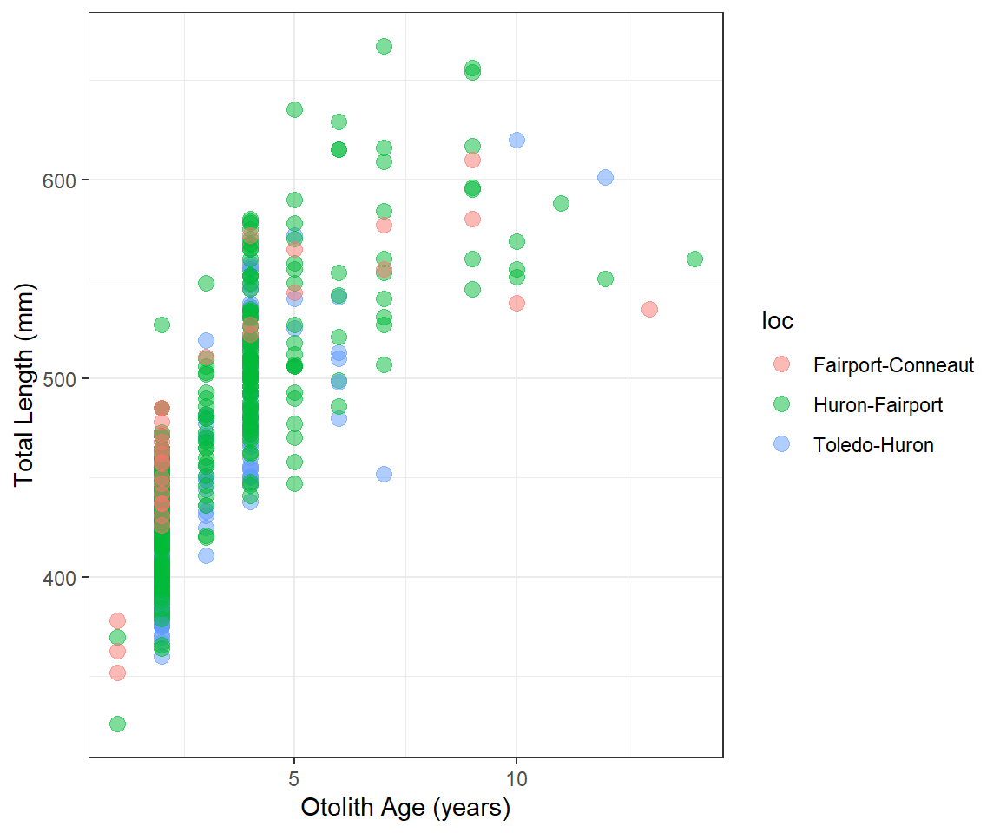
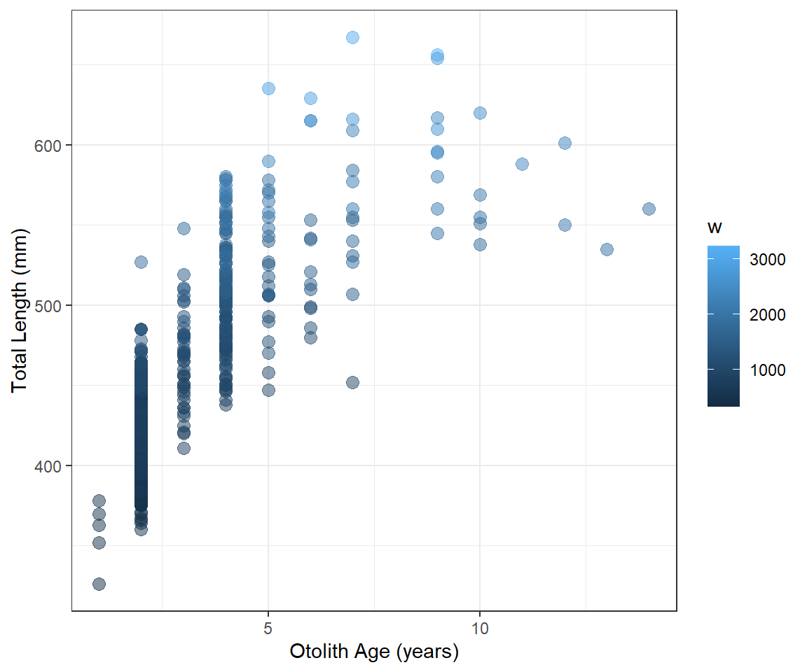
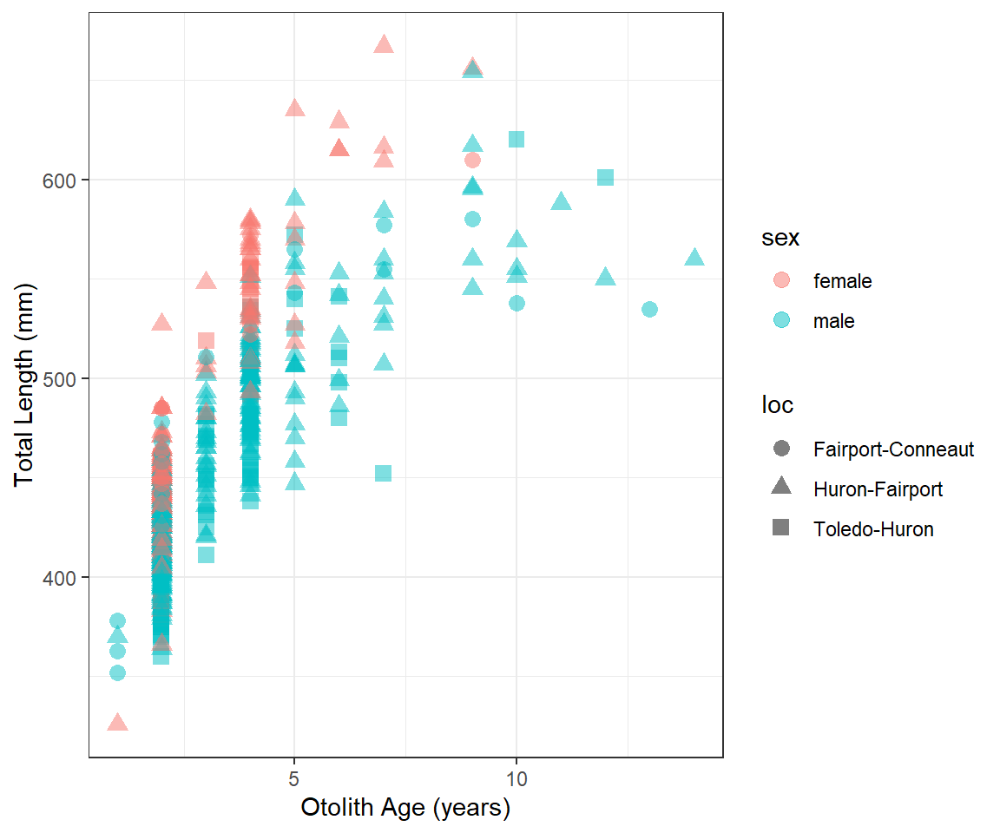
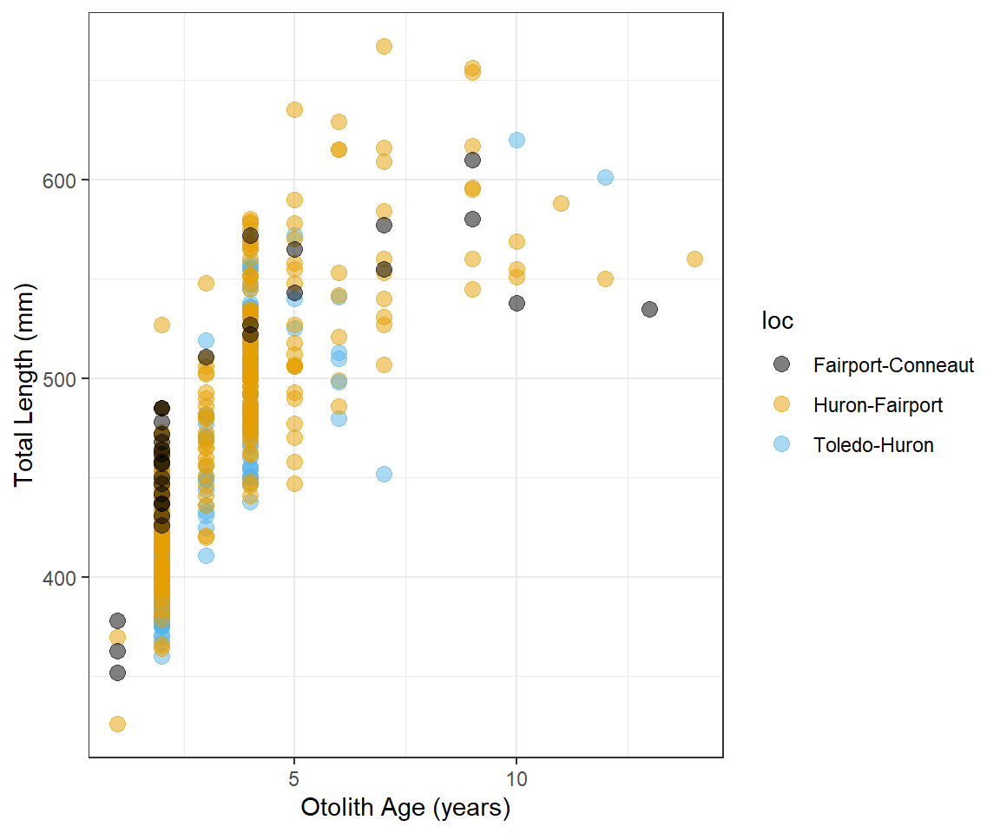

 Lake Erie is world-renowned for its Walleye [Sander vitreus] population and fishing. The Ohio Department of Natural Resources samples Walleye with gillnets from three regions of Lake Erie every fall. Their results from 2003-2014 are stored in this file from the fishR webpage. Metadata for this file is here. Before loading these data, load the tidyverse package, which will load ggplot2 along with a few other packages you will need to access these data.
library(tidyverse)For this exercise, we will reduce the data set to only those fish captured in 2003 and change the location codes from numbers to words.1
wae <- read.csv("https://raw.githubusercontent.com/droglenc/FSAdata/master/data-raw/WalleyeErie2.csv") %>%
filter(year==2003) %>%
mutate(loc=plyr::mapvalues(loc,from=c(1,2,3),
to=c("Toledo-Huron","Huron-Fairport","Fairport-Conneaut")),
loc=factor(loc))
str(wae)
Construct ggplot2 code to match the graph below (as closely as you can).

Construct ggplot2 code to match the graph below (as closely as you can). [HINT: The graphic at the bottom of this page might be useful.]

Construct ggplot2 code to match the graph below (as closely as you can).

Construct ggplot2 code to match the graph below (as closely as you can).

Construct ggplot2 code to match the graph below (as closely as you can).

Modify your plot from “Total Length vs Age 2” to use three divergent colors for the different locations that are colorblind-safe and printer-friendly. See the color brewer website or these color-blind-friendly pallettes for help with this. Note that hexadecimal codes for colors can be entered the same as names of colors. An example is below.

These data were read directly from the webpage. However, the data can be downloaded to your computer and loaded from there into R, which would be similar to how you would load your own data into R. How to load a CSV file into RStudio is described in this video, for which the password is “NCStats” (without the quotes).↩︎